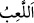

onları, dâimî lezzete götüren îman ve amelden alıkoyan “sadece bir oyun ve
eğlenceden başka bir şey değildir.”
Oyun “__WORD__”, kişiyi yararlı olan şeylerden alıkoyup uzaklaştıran şeydir.
Eğlence “__WORD__” ise kişinin ciddi işlerden uzaklaştırılıp eğlenceye yönlendirilmesidir.
Küfür ve ısyandan korunup sakınan “müttakîler için elbette âhiret yurdu daha
iyidir.” Çünkü ahiret nimetleri zarardan uzak olup sırf faydadan ibarettir. Hiç bir zaman
sahibine elem vermezler ve devamlıdırlar.
Siz ahiretle dünyadan hangisinin daha hayırlı olduğunu “düşünmüyor musunuz?”
Dünyaya bu ismin verilmesi, ya ahiretten önce olduğu için yakınlığından (dünüvv), ya
da “alçak” (denâet) olmasındandır.
Ahirete bu ismin verilmesi ise dünyadan sonra yaratıldığı içindir.
Allah Teâlâ ahireti, gözlerden uzak (gâib) kılmıştır. Şayet o insanların görüp bildiği
bir yerde olsaydı, o takdirde kimse inkar edemezdi. Mükellefiyyetler ve meşakkatler
kalkardı. Onun için yeryüzündeki şeyler imtihan için ziynet kılınmıştır. Hakîkatte dünya
seni Rabb’inden alıkoyan her şeydir.
İşin hakîkatine erenler şöyle demişlerdir: Yeryüzü, semalar ve bu ikisi içindeki kevn
ve fesad alemi, dünyanın tarifi içerisine girer.
Arş ve kürsî ile bunlarla ilgili salih ameller, temiz ruhlar ve cennet ise ahirete
dahildir.
Kudsî hadisde şöyle buyurulmuştur: “Allah dünyayı yarattığı vakit ona şöyle hitab
etti: Ey dünya, bana hizmet edene sen de hizmet et. Sana hizmet edeni ise yor,
peşinden koştur.”[96]
İşte bu sebeple bazı Allah dostları için dünya; kocakarı kılığında gelir, evini süpürür.
Bazı Allah dostları için de günde bir ekmek getirir.
Eğer sen: “Allah dünyayı mü’minler için yarattığı halde, niye ona rağbet etmemeyi
emrediyor?” dersen, biz buna cevaben deriz ki: Düğünlerde damadın başına şeker
saçıldığı zaman himmetinin yüceliğinden dolayı onu almaz. Şayet alsa ayıp olur.
Hadisde şöyle buyurulmuştur: “Firdevs cennetindeki ziyafet için nefislerinizi
acıktırınız!” Akıllı misafir, sonradan gelebilecek tatlıyı hesab ederek tıka basa karnını
doyurmaz.
Hikaye edilir ki, Bağdad kadılarından biri maiyyeti ile birlikte külhanların bulunduğu
sokaktan geçiyordu. Bu esnada onları gören üstü başı yağ-pas içinde, hırpânî kılıklı,
sanki cehennem zebanilerini andıran yahudi bir külhan önlerine geçti. Kadıyı taşıyan
katırın gemine yapışarak şöyle dedi:
“Ey kadı, sizin Peygamberinizin söylediği; “Dünya mü’minin zindanı, kâfirin
cennetidir”[97] sözünün anlamı nedir? Görmüyor musun sen bir mü’min, bir
Muhammedî olduğun halde dünya senin için cennettir. Benim için ise bir hapishane